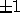

| Perfection |
From the article Number Theory in the 1994 Microsoft Encarta: ``If a, b, c are integers such that a = bc, a is called a multiple of b or of c, and b or c is called a divisor or factor of a. If c is not  , b is called a proper divisor of a. Even integers, which include 0, are multiples of 2, for example, -4, 0, 2, 10; an odd integer is an integer that is not even, for example, -5, 1, 3, 9. A perfect number is a positive integer that is equal to the sum of all its positive, proper divisors; for example, 6, which equals 1 + 2 + 3, and 28, which equals 1 + 2 + 4 + 7 + 14, are perfect numbers. A positive number that is not perfect is imperfect and is deficient or abundant according to whether the sum of its positive, proper divisors is smaller or larger than the number itself. Thus, 9, with proper divisors 1, 3, is deficient; 12, with proper divisors 1, 2, 3, 4, 6, is abundant."
Given a number, determine if it is perfect, abundant, or deficient.
A list of N positive integers (none greater than 60,000), with 1 < N < 100. A 0 will mark the end of the list.
The first line of output should read PERFECTION OUTPUT. The next N lines of output should list for each input integer whether it is perfect, deficient, or abundant, as shown in the example below. Format counts: the echoed integers should be right justified within the first 5 spaces of the output line, followed by two blank spaces, followed by the description of the integer. The final line of output should read END OF OUTPUT.
15 28 6 56 60000 22 496 0
PERFECTION OUTPUT
15 DEFICIENT
28 PERFECT
6 PERFECT
56 ABUNDANT
60000 ABUNDANT
22 DEFICIENT
496 PERFECT
END OF OUTPUT